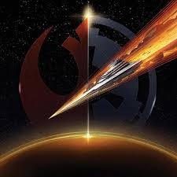

Once a heroic Jedi Knight, Darth Vader was seduced by the dark side of the Force, became a Sith Lord, and led the Empire’s eradication of the Jedi Order. He remained in service of the Emperor -- the evil Darth Sidious -- for decades, enforcing his Master’s will and seeking to crush the fledgling Rebel Alliance. But there was still good in him…
Once a heroic Jedi Knight, Darth Vader was seduced by the dark side of the Force, became a Sith Lord, and led the Empire’s eradication of the Jedi Order. He remained in service of the Emperor -- the evil Darth Sidious -- for decades, enforcing his Master’s will and seeking to crush the fledgling Rebel Alliance. But there was still good in him…
 The son of Han Solo and Leia Organa, Ben Solo was seduced by the dark side of the Force and renamed himself Kylo Ren, becoming the First Order’s champion and Supreme Leader Snoke’s student. Kylo killed his father and seeks to destroy his mother’s Resistance and the remnants of the Jedi Order. Though a servant of the dark side, he still struggles against the pull of the light side of the Force.
The son of Han Solo and Leia Organa, Ben Solo was seduced by the dark side of the Force and renamed himself Kylo Ren, becoming the First Order’s champion and Supreme Leader Snoke’s student. Kylo killed his father and seeks to destroy his mother’s Resistance and the remnants of the Jedi Order. Though a servant of the dark side, he still struggles against the pull of the light side of the Force.
 The Rebel Alliance stood bravely against the evil of the Galactic Empire, never backing down despite overwhelming odds. Formed from resistance movements that arose during the Clone Wars, the Rebellion worked in secret for decades to overthrow the Emperor and restore democracy to the galaxy. Eventually, armed with the firepower of ships like the X-wing and A-wing, and the leadership of figures including Princess Leia and Admiral Ackbar, the Rebel Alliance triumphed over the Empire at the Battle of Endor.